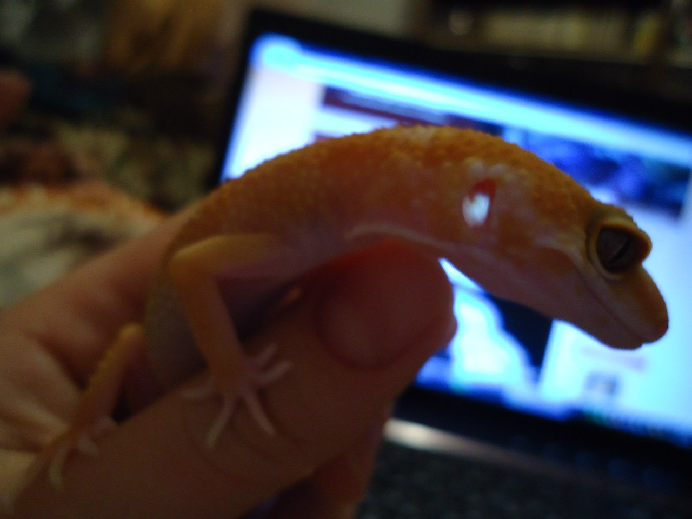
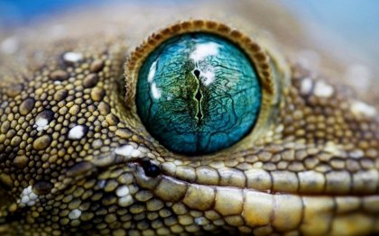

Немного о ящерицах
В отличие от змей, у большинства ящериц (за исключением некоторых безногих форм) имеются в той или иной степени развитые конечности. Хотя безногие ящерицы внешне похожи на змей, у них сохраняется грудина, а у большинства — пояса конечностей; в отличие от змей, левая и правая половины челюстного аппарата неподвижно сращены. У безногих ящериц глаза, как правило, снабжены подвижными раздельными веками, в то время как у змей веки срослись, образовав на глазах прозрачные «линзы». Также они отличаются рядом других особенностей, таких например, как строение и структура чешуи.
Нервная система
Мозг нептичьих рептилий более развит, чем у амфибий и рыб, хотя имеет небольшие размеры — не более 1% массы тела. Имеется 12 пар черепно-мозговых нервов. Отличие позвоночного столба рептилий от млекопитающих в том, что у первых спинной мозг продолжается вплоть до кончика хвоста.
Органы чувств
Ухо выполняет функции слуха и поддержания равновесия. Тимпаническая мембрана обычно видима внутри небольших углублений по сторонам головы. Она покрыта кожей, верхний слой которой меняется во время линьки. У некоторых видов, например, у безухой ящерицы (Holbrookia maculata), тимпаническая мембрана покрыта чешуйчатой кожей и не просматривается. У рептилий есть только две слуховые кости: стремечко и его хрящевой отросток. Евстахиевы трубы соединяют полости среднего уха и глотку.

Глаза
Круглый светло-коричневый глаз с узким вертикальным зигзагообразным зрачком Строение глаза рептилий сходно с таковым у других позвоночных. Радужка содержит поперечно-полосатые, а не гладкие, мышечные волокна, поэтому обычные мидриатики не оказывают действия. Зрачок обычно круглый и относительно неподвижный у дневных видов и имеет вид вертикальной щели у ночных. Зрачок многих гекконов имеет зазубренные края, что заметно при его полном сужении. Изображение у них многократно накладывается на сетчатку, что позволяет гекконам видеть даже при очень слабом освещении. Хрусталик не двигается, его форма меняется под действием мышечных волокон реснитчатого тела. Веки обычно присутствуют, кроме некоторых гекконов и сцинков рода Аblepharus, веки которых сросшиеся и прозрачные, как у змей. Нижнее веко более подвижно, оно и закрывает глаз при необходимости. У некоторых ящериц оно может быть прозрачно, что позволяет им видеть, при этом обеспечивая защиту глаз. Мигательная перепонка обычно присутствует.

Скелет
Многие ящерицы способны к аутотомии — отбрасыванию хвоста. Хвост зачастую окрашен ярко, чтобы привлечь внимание хищника именно к нему. У таких ящериц есть вертикальные плоскости разлома из хрящевой или соединительной ткани в теле и части нервных дуг в хвостовых позвонках. У игуан эта ткань с возрастом окостеневает, и хвост становится более прочным. Отросший заново хвост имеет обычно более темный окрас, измененный рисунок чешуй и форму. Ребра обычно есть на всех позвонках, кроме хвостовых.

Эндокринная система
Уровень половых гормонов определяется длиной светового дня, температурой и сезонными циклами. Щитовидная железа в зависимости от вида может быть одиночной, двудольчатой или парной и отвечает за линьку. Парные паращитовидные железы контролируют уровень кальция и фосфора в плазме крови. Надпочечники расположены в связке семенника и не должны быть удалены в месте с ним во время кастрации. Поджелудочная железа рептилий выполняет экзокринную и эндокринную функции. Бета-клетки производят инсулин, но диабет у ящериц встречается редко и обычно связан с каким-либо другим системным заболеванием. Инсулин и глюкагон контролируют уровень сахара в плазме крови.